富山三大仏巡り〜高岡大仏、小杉大仏、庄川大仏
富山には富山三大仏というものがある。
高岡大仏くらいは聞いたこともあろうが後の二つはナンだ？と思われる方がほとんどであろう。
答えは庄川大仏、小杉大仏、高岡大仏。この３つの大仏をもって富山三大仏と称するのだ。
今回はこの材質も建設時期もまちまちな３つの大仏を通して富山に脈々と息づく大仏スピリッツを検証してみようと思う（ちょっと大袈裟）。
高岡大仏/富山県高岡市
富山県で大仏といえばまず思い浮かぶのが高岡大仏であろう。
大仏ジャンキーにとっては「大仏」の部分がなくても高岡大仏だったりするのだが・・・
高岡大仏といえば富山三大仏というよりは奈良、鎌倉と並び日本三大仏と称される超メジャー級大仏だ。ただし日本三大仏のナンバー3は岐阜、東京、兵庫などの大仏も名乗りを挙げたりして未だ流動的な状況だ。恐らく100年経っても日本三大仏が決定する事はないだろう。後は誰が生き残るかのサバイバルレースとなっている。
で、高岡大仏である。
良く知られた事だが、高岡大仏は何度かつくりなおされている。
初代は承久3(1221)年頃の創建。丈六の木造仏であったとされる。その後、高岡築城に伴い慶長14(1609)年に現在地に移転した。
しかし文政4(1821)年の大火で焼失、天保12(1841)年に木造の丈六仏が再建されている。しかしまたしても明治33(1900)年の大火で焼失。
2度の焼失を受けて信徒の松本宗左衛門氏は燃えない大仏を発願した。
そして現在ある高岡大仏が登場したという次第だ。現大仏の完成は昭和7年。
高岡は云わずと知れた銅器の街。現在も銅器のシェアは9割を占めるという。そんな高岡銅器産業界の意地とプライドと経験をかけて造られた大仏さんなのである。
と云う訳で、初代から数えて780年以上の歴史を誇る高岡大仏、確かに日本三大仏の三番手の最有力候補にふさわしい。
大仏は高岡の市街地にある。
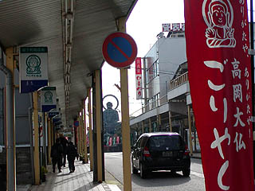
大仏前の商店街。ノボリや看板も大仏一色だ。いかに地元に愛されているかが良く判る。
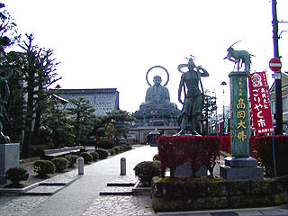 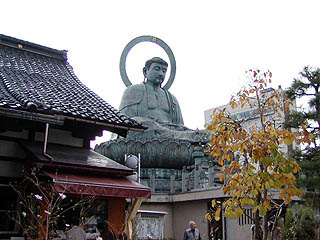
大仏は大仏寺という寺の境内にある。
大仏の左が本堂。入口にも銅器の町らしくブロンズの仁王像が立っている。
大仏さんの大きさは総高さで15.85メートル。座高で7.43メートルと奈良、鎌倉の大仏さんに比べるとやや小さい。
与謝野晶子が鎌倉大仏より美男である、と評したという話があるが、確かに写実的な顔である。美男かどうかは好みだが。
あたしゃ鎌倉の大仏さんの方がカッコ良いと思いますけど、さらに云えば奈良の方が顔付きがファンキーでいいですね。
台座正面に入口があり中に入れる。
早速中に入ってみると・・・
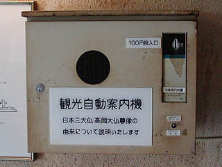
おおっと！観光自動案内機。動作するのかどうか不安で100円投入できませんでした・・・
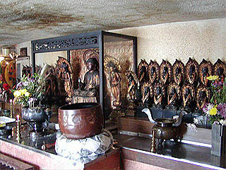
入って正面には三十三観音が。
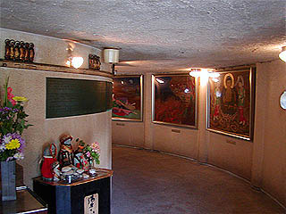 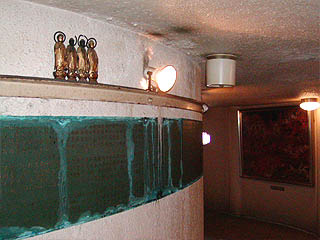
台座内はドーナツ状の回廊になっておりひと回り出来るようになっている。
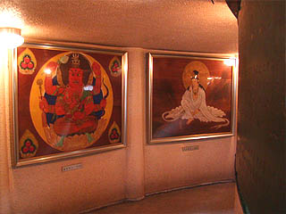
回廊の壁には昭和27年に奉納された13枚の仏画が掛けられている。回廊を進んで行くと中央に丸い部屋があった。
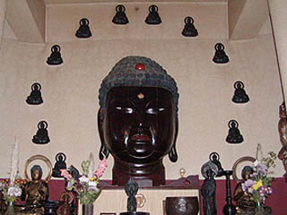
中央の部屋の正面には燃えてしまったという前高岡大仏の頭部が祀られていた。
丈六仏は漆塗りだった。
なお、現在は燃え残ったということで火の用心を戒めているとか。
仏頭の周りにある12体の鋳造仏は本来、現大仏の創建時に光背に装着する予定だったそうだが、中止となりここに納められている。
かつてあった大仏と使われる事のなかった光背仏を合体させたもう一つの高岡大仏である。
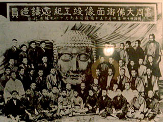
回廊に掲げられていた高岡大仏御面像竣工記念鋳造員の写真。明治44年とある。実に良い写真ですね。
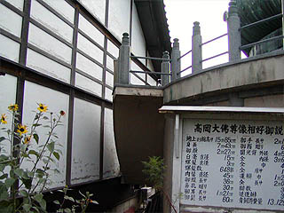 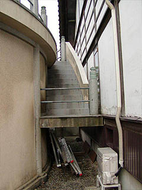
そんなこんなで台座内を一巡して、外に出た。
大仏の左手、丁度大仏と本堂の間に階段を発見。もしや台座の上に登れるのかと思い裏手に回り込んでみたら、本堂から直接つながっていて、外からは登れない。お寺の方に確認してみると一般の参拝客には登らせていないとの事。残念。
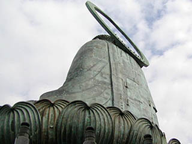
裏手に回ったついでに大仏さんの後ろ姿チェック。
背中に扉が付いていた。メンテ用なのだろうが、中に入れるような造りにはなっているようだ。
扉の左側には「原型師 中野雙山」とあった。
ちなみに光背は昭和33年に後付けされたもの。
先程、台座内にあった12体の掛仏が昭和初期の現大仏建設時に造られていたことを考えると最初から光背は付ける予定だったのだろう。
それが何らかの理由で中止になり、後から付けられたと考えられる。
そういった意味では昭和の長い時期をかけて徐々につくられていった大仏さんということになろうか。
小杉大仏/富山県小杉町
お次は小杉町にある小杉大仏蓮王寺という真言宗のお寺にいる木造の大仏さんだ。
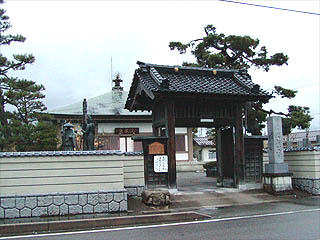
最近区画整理が行なわれたらしく、広い道に新しい塀、コンクリート造の本堂と一見、歴史の浅い寺に見える。
ところがここは小杉町発祥の地であると云う。
本堂には御自由にお上がりください的な貼紙があったので遠慮なく上がらせてもらった。
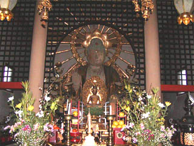
これが小杉大仏である。
内陣と外陣の間が格子欄間のようになっていて、大仏の部分だけが丸く抜けている。洒落た造りだ。
写真を撮っていると大黒さんらしき方がいらっしゃって色々と話を聞かせてもらった。
この寺は大層古い歴史を持ち、開創は大宝元(701)年というから驚きだ。
大仏さんにしても元々千年程前につくられたものだという。
「もともと小杉町というのはほとんどウチの寺域だったんですよ」
「隣の大門町はウチの寺の門があったから大門町」
「この間道路工事をしたら地下から千年前の仏像が出て来たんですよ、ホラそこの。」
などと気の遠くなるような話を事も無げに語る大黒さん。
凄いぞ！お伽話を聞いてるような気分になってきた・・・
で、その御年千才の大仏さんである。
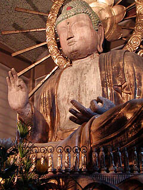 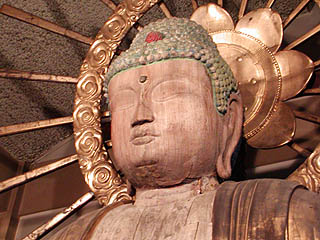
頭部と手のみが建立当時のものであるという。
天文年間、長尾為影が増山城攻めの際にこの寺（当時は小杉町全域位あった筈）を焼き払った。
その際、大仏の頭と手の部分だけを大急ぎで剥ぎ取って避難したと云う。
従って現在も首の部分に無理矢理剥ぎ取った跡が残っている。
その後、江戸中期に胴体を復元し、今の姿になったという。
全体的に修復したのだろう。とても千年前の仏頭とは思えない程奇麗だ。
大仏さんの裏手に回るとお尻の部分がポッカリ空いていて中を覗き込めるようになっている。
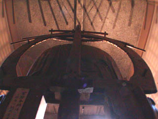 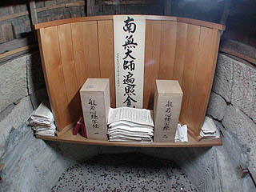
中は本堂を新築した際に造られたのだろう、円状に礎石が組まれている。
底にはお賽銭が投げられており南無大師遍照金剛の文字の下には写経された紙が積んである。
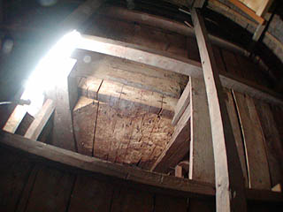
穴はあまり大きくなく、身をよじってやっと入れる位、で、上を見上げると大仏さんの胴体部分の中がえぐられた部分が見える。
この大きさだから勿論、中に入ってどうのこうのというモノではないが、胎内仏くらいはあるのだろう。
穴の外から手だけを入れて撮ったので分かりにくいですね。
胴体が再建された江戸中期から背後に穴が開いていたのだろうか、それとも後から穴が開けられたのだろうか？大黒さんに聞くの忘れてた・・・
庄川大仏/富山県庄川町
富山三大仏、真打ちは庄川町にある庄川大仏である。
この大仏は地名から金屋大仏とも呼ばれている。
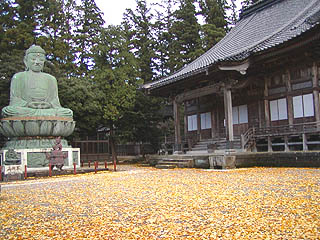
大仏は光照寺という寺の庭先におわす。
本堂の前は銀杏の葉で敷き詰められており黄色い絨毯のようだ。
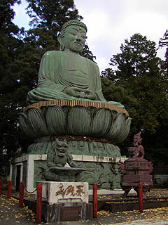 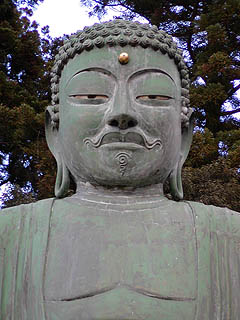
庄川大仏である。
大きさは10.1メートル像高は6.3メートルである。一見ブロンズ製のように見えるが、コンクリート製だ。
完成は昭和7年。コンクリート製の大仏としてはかなり初期に造られたものだ。
10万人分の遺骨が塗り込められているということだ。正式には十万納骨大仏と呼ぶらしい。
んっ？
どこかで聞いた話だと思ったら、今は無き別府大仏と一緒じゃないですか。
別府大仏完成が昭和3年、ここの大仏の計画があがったのが昭和3年。着工が昭和5年。
時期的にもここの大仏が別府大仏からインスパイアされて建立した可能性がある。
もちろん何の確証もないが、この大仏が建立された昭和7年といえば日本国内にはコンクリート製の大仏は数える程しかなかったはずである。
私の知る限り、昭和7年以前に完成していたコンクリート大仏といえば先の別府大仏、そして愛知の聚楽園大仏と浄福寺大仏くらいだろうか。
そう考えると、もしかして日本四番目のコンクリ大仏？
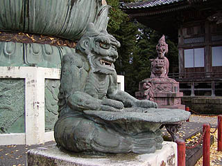 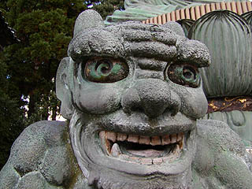
大仏の前には獅子が乗った香炉と鬼の座っている賽銭箱がある。
この鬼の造形がいい感じ。目が回っちゃってます。大仏の原型は竹内源造という人物らしいのだが、こちらも同じ人物のモノなのだろうか？
鬼が抱えてる蓮の葉の底に穴が開いていてそこに賽銭を投入する仕組みになっている。
賽銭はこの穴を伝って下の賽銭箱に溜まるようになっているのだが、銀杏の葉がぎっしり詰まっていたので少し除けときました。
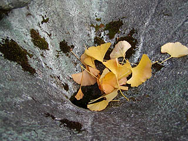
富山三大仏とはいえ観光客がたくさん来るわけでもなく、参拝客がたくさん来るわけでなく、ましてや文化財になどになるはずもない、その代わり近所の子供達が度胸試しによじ登ってしまうような、そんな風情の大仏が私は大好きです。
おまけ〜少童社弁財天/富山県新湊市
新湊市の新富山港付近は全国的に有名な軽金属工場が立ち並ぶ。
そんな港の一画に大きな弁財天がある。
本体の大きさは9.2メートル。昭和61年につくられたこの弁財天の材質はお土地柄か高純度のアルミ製だそうだ。
勿論アルミの仏像などそうあるわけではないので、日本一のアルミ立像ということになろうか。
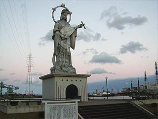
夕暮れに立つ弁財天。後ろには新富山港の港湾施設が見える。
煙突、高圧線鉄塔、クレーンなど弁天様よりはるかに巨大な構造物がニョキニョキ建っているところなので全然目立たないで凄く淋しそうに見える。水の神ということもあり、新富山港の守神という意味でつくられたらしいのだが、それにしても何とも味気ない風景だ。
これだけ宗教と懸け離れた場所に建つ大仏（というか大弁財天）もそうそうないと思う。
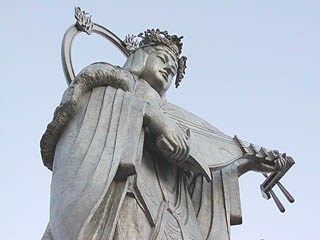
琵琶にはキッチリ弦まで張ってあります。
2003.11.
珍寺大道場 HOME